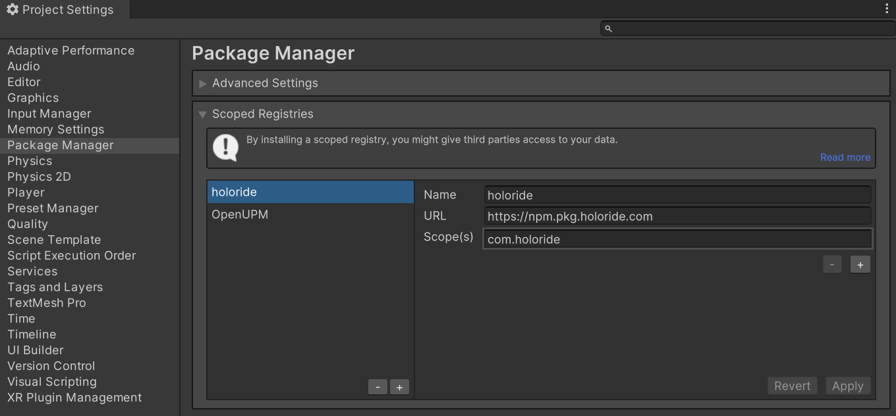
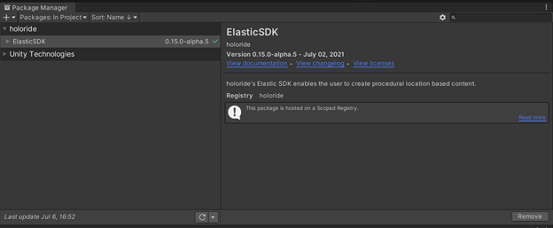
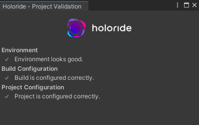

Elastic SDK Setup
System Requirements
- Operating System for Unity Editor: Windows 10, Windows 11, macOS (Experimental)
- Tested Unity versions: 2021.3.30 (LTS) and 2022.3.18 (LTS)
- Stable internet connection
Get the Elastic SDK
To download the Elastic SDK, you have to use Unity’s built-in package manager (UPM). You will need to add our registry for this, as described below.
As a quick start you can skip these steps by using our Unity Template Project on GitHub.
Step 1
Add the necessary registries as a scoped registry in the Unity Package Manager.
To do this, open Unity and navigate to Project Settings > Package Manager and add the following scoped registry:
| Label | Entry |
|---|---|
| Name | holoride |
| URL | https://npm.pkg.holoride.com/ |
| Scope(s) | com.holoride |
- Add a new line with 'plus' button to insert the scopes separately
- Be sure there is no white spaces at the end of any of the fields

Since we have a dependency to xNode and Unitask we also need to add these dependencies. We can do this via OpenUPM which is another scoped registry:
| Label | Entry |
|---|---|
| Name | OpenUPM |
| URL | https://package.openupm.com |
| Scope(s) | com.github.siccity.xnode com.cysharp.unitask |
Step 2
Now you can install the Elastic SDK from the Package Manager window. Choose Packages: My Registries in the top bar. The Elastic SDK can now be selected in the list and be installed by clicking the button on the bottom.

Enable your Unity project
To enable your Unity Project to be used with the Elastic SDK, you need to link a holoride manifest file (HMF) specifically created for your project.
Please contact us at esdk-support@holoride.com to get in touch.
Validate Your Project
After successfully importing the ElasticSDK package with all its dependencies, see the holoride Project Validation window to set up your project and fix all points on the list that show an exclamation mark (Check the Inspector when clicking Select). You can also find it the main menu under holoride > Project Validation, if you accidentally closed it.

You can update the Elastic SDK from the Unity Package Manager window whenever a new version is available.